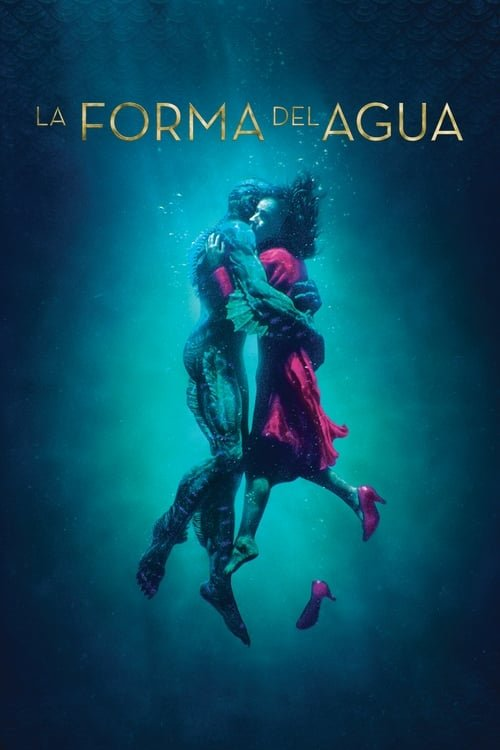

La forma del agua (2017)
Sinopsis Rápida
En el corazón de la Guerra Fría, una solitaria limpiadora en un laboratorio de alta seguridad se enamora de un ser misterioso y cautivo: una criatura anfibia con poderes extraordinarios.
Sinopsis Detallada
Guillermo del Toro nos sumerge en una historia de amor prohibida entre Elisa, una mujer muda, y un anfibio capturado por el gobierno. La película, ambientada en 1962, explora temas de soledad, opresión y la búsqueda de conexión en un mundo lleno de secretos y peligros. Con una atmósfera visualmente impactante y una banda sonora cautivadora, 'La forma del agua' es una fábula oscura y romántica que deja una huella imborrable.
¿Por qué tenés que verla?
- Una historia de amor única e inolvidable entre dos seres tan diferentes.
- La magistral dirección de Guillermo del Toro, con su estética visualmente impresionante y atmósfera opresiva.
- Su impacto en la crítica y su reconocimiento con el Oscar a Mejor Película.
- Una exploración profunda de la soledad y la búsqueda de la conexión humana.
Idea Extra
Análisis del simbolismo en 'La forma del agua': explorar el significado de los personajes, la criatura anfibia y los escenarios, relacionándolos con la narrativa política y social del contexto histórico.